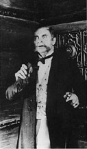

part1.shtml

PART ONE
- * BOOK ONE - The History of a Family
- Summary
- Analysis
- * BOOK TWO - An Inauspicious Meeting
- Summary
- Analysis
- * BOOK THREE - The Sensualists
- Summary
- Analysis
BOOK ONE - The History of a Family
Summary
1. Narrated in the third person, the beginning of the novel informs us that it is the recounting of a series of events which happened thirteen years earlier, and names Alexey Fyodorovich Karamazov as the storyís hero. Fyodor Pavlovich Karamazov, his father, is a wealthy landowner whose lifestyle is one of drinking, womanizing and debauchery. He marries for the first time, a young woman named Adelaida Miusov, who is an heiress in an aristocratic landowning family. She elopes with Fyodor in defiance of her family and society. They fight constantly, and it is said that she beats him. She gives birth to a son, Dmitry (Mitya) and when he was three years old she ran away with a poor teacher. Fyodor then turns his home into a harem and paints himself as the pathetic man deserted and wronged by a woman. In a drunken state Fyodor Karamazov learns that Adelaida has died poor, of either typhus or starvation. He praises God for setting him free, and at the same time cries for her. 2. Fyodor neglects his young son Dmitry, forgetting his existence. He is taken in first by the servant Grigory Kutuzov. He was then given to a cousin and was cared for by various relatives. He lived well aware of who his father was, and was told he would have an inheritance of land and money from his mother. His idea of this inheritance was exaggerated. He goes to military college and leads a sensualistís life of women, alcohol, and money. He met, and did not get along with his father, and stayed away as long as he was receiving some amount of money from him. 3. When Dmitry has been taken away at four, Karamazov marries a second time to a young 16 year old woman named Sophia Ivanovna. Fyodor rescues her from her cruel benefactress and elopes with her. He treats her terribly, and even has orgies in the house while she is there. She becomes hysterical, a shrieker, and bears Fyodor two more sons, Ivan and Alyosha (Alexey). She died when Alexey was four years old. The boys were cared for first by Grigory, the same servant who had cared for Dmitry. They are then taken in by Sophia's former benefactress. She dies and leaves each of them with a thousand rubles. Ivan becomes a withdrawn and morose young man, concentrating on matters intellectual in nature, and attending university. He writes book reviews and articles in the issue of the church courts, which circulate his name and ideas. Suddenly Ivan returns to his father's home after university at age 24, and lives there with a father with whom he had had almost no contact. They seemed to get along well together. 4 - 5. The youngest son of Fyodor was a lover of humanity and all people seemed to like, and be drawn to, Alexey Karamazov. He is deeply religious, modest, chaste, and devoted. Alexey decides he wants to become a monk. He wants to give himself in service to God, to immortality, to the monastery and particularly to the elder Zosima to whom the young Alexey becomes fanatically devoted, believing that the elder had miraculous powers. He was not alone in this devotion to the elder, whom was widely held in high regard, and whom many expected would bring a miracle at his death. It is at this point in the novel that Alexey decides to go see his father, and the grave of his mother, and to tell of his intent to enter the monastery. At this point the four Karamazov men are reunited. They decide to go to the monastery for the arbitration of elder Zosima, to help Dmitry and his father end this fighting over money and inheritance.
Analysis
The beginning of this novel is an introduction to the main characters and
to their background. The narrator told the reader in the very beginning
that it was the story of the death of Fyodor Pavlovich Karamazov. It is
patricide, but we are shown that Fyodor Karamazov can barely be called a
father. He has taken no part in raising his three sons. He sees them only
as very small children, whom he thoroughly ignores and neglects, and as
adults whom he does not know. They are handed around from place to place
as children as Fyodor simply forgets they exist. Only the eldest son has
any conception that he is owed some form of inheritance from his father.
This is the cause for the intense dislike and antagonism between Dmitry
and Fyodor. This extreme antagonism and dislike between Fyodor Karamazov
and his eldest son Dmitry is clear from the beginning. It seems as though
Mitya is the most like his father of the three legitimate sons. He has acquired
the sensuality of his father more than his siblings have. This is the same
sensuality which makes Fyodor a despicable character. It is the only thing
he lives for. The other two brothers have not inherited this same sensuality.
Ivan, the next eldest son, who is twenty-four upon his return home, is far
more intellectual in nature. He is a man of the mind, whose name has become
known for his articles. He was never counting on an inheritance but has
always been conscious of having always lived at the expense of others, and
he greatly resents his father for that. Finally we see Alyosha, who is a
devoutly religious, well-loved man, devoted to God and to people. He loves
and is loved. Only he seems not to harbor some deep-seated resentment or
anger for his father, or about his upbringing. He is close to Dmitry, who
has no real stance on faith in the beginning of the novel, but not to Ivan
who claims to be an avowed Atheist, with no belief in God or life after
death. The other central character introduced in book one is the elder Zosima
to whom Alexey has pledged his devotion. Here we see a man most like the
youngest Karamazov. He is a holy man, admired and revered by many. He is
the man to whom the Karamazovs turn, in a half-serious gesture, for mediation
and arbitration in the dispute between father and son. With this preliminary
glance at the four Karamazov men, and the introduction of father Zosima,
it is clear that the differences and strife between them are deep and significant.
None of the three sons claim to love, or even to like, their father. Ivan
who is neither particularly like or unlike his father, appears at this point
in the novel to be the only one who actually gets along with, and influences,
his father. They live together, while Dmitry lives alone and Alexey lives
in the monastery.
BOOK TWO - An Inauspicious Meeting
Summary
1-2. Fyodor and Ivan arrive together at the monastery with a Peter Miusov and his friend Peter Kalganov. Only Dmitry has not arrived for the meeting as the others set about to wait for the eldest Karamazov brother and elder Zosima in Zosima's cell. During the wait, Fyodor Karamazov annoys the others, particularly Miusov, with his jokes and insults aimed at the monks and their chosen lifestyle. The meeting, once Zosima arrives, does not go well, and Alyosha feels great shame at the embarrassment his father in particular causes him. He is, as usual, the loud and brazen clown. The chapter is titled The Old Clown, and is filled with Karamazov's endless talking. Near the end he falls on his knees before the elder Zosima and begs to know what he is to do to gain eternal life. Whether he really cares to know, or is mocking those in the cell is not made clear. The answer from the elder however, is simple, as he tells Fyodor that he must stop lying to everyone, and especially to himself, and at that Fyodor kisses the hand of the elder. This does not really change his demeanor, and soon the elder Zosima excuses himself. Through this all, Dmitry never arrives. 3. Elder Zosima leaves the cell to talk with some of the many people, mainly peasant women, who have come to see him. Here we meet Mrs. Khokhlakov and her paralyzed daughter Lise, who as recently lost the use of her legs at age fourteen. One of the other women is one who comes grief-stricken from the recent death of her three year old son. She has come with her soul dried up from sorrow at his death. To this woman, and to many of the others, the elder gives essentially the same advice which is to love man, and to love God. Redemption lies in love. He says...if you love, you are of God. . . . Everything can be atoned for, everything can be saved by love. (56). 4. The last woman h speaks to is Mrs. Khokhlakov, who claims fervently that Zosima has cured her daughter of her fever, though she is still
without use of her legs. During this visit we learn that Dmitry's fianc
e Katerina is sending for Alexey, she wishes to speak to him. We also become
aware that Alexey knows Mrs. Khokhlakov and Lise and that Lise feels a great
affection for Alexey, telling her mother that she is only happy when she
is with him. The bulk of the conversation is between the elder Zosima and
Mrs. Khokhlakov concerns her claim that she suffers from lack of faith.
Elder Zosima informs her that it is only through active love and selflessness
that she can become sure in her faith in God and in the immortality of her
soul. Only through active and selfless love can she rid herself of her doubt.
The elder Zosima also tells her to avoid lies, self-deception, aversion
towards others, and fear. He warns her that it is not easy to love actively,
but that she must do so. At the end of the meeting, it is agreed that the
elder should send his novice, Alyosha to see Mrs. Khokhlakov and Lise. 5.
After visiting with those who came to see him, Zosima returns to his cell
for his meeting with the Karamazovs. Dmitry has still not arrived, and Ivan
is discussing his articles with two monks when Zosima enters. The elder
enters into the conversation, in which Ivan is expressing his views on criminal
punishment in church and state. He argues that if the state would allow
the church to punish criminals, it would be more effective than the state
doing so. This he sees as a way to transform society and man. Zosima agrees
but clarifies that only conscience can constitute a real punishment or deterrent
to crime, it is the only effective one which might bring about change. 6.
At this point Dmitry arrives, and claims that the servant Smerdyakov informed
him of the wrong time for the meeting. He bows to the elder and the conversation
about the ideas of love, conscience and immortality continues. Miusov tells
the group of Ivan's belief that love exists between men solely because of
their belief in the immortality of the soul, and furthermore that if there
was no such belief than everything would be permitted, and self-interest
would be the only legitimate motive for action. Dmitry especially is shocked
by, and strongly against these ideas. It is here that the meeting reaches
its climax, and intended purpose. That is, the issues concerning Fyodor
and his son are made known, and insults and accusations are hurled. Questions
of money stolen and hidden, and questions of various women arise. Fyodor
accuses Dmitry of compromising the young Katerina, the orphan of honorable
parents, by making her his fianc e and then chasing after Grushenka, a woman
of ill-repute. Dmitry responds to this by accusing Fyodor of being jealous,
of also wanting Grushenka for himself. Fyodor responds by comparing his
sons to two characters in Robert Schiller's Robbers, and says that he would
challenge Dmitry to a duel if he were not his son. Dmitry wonders aloud
why does such a man live? and why is he allowed to continue defile the earth
by his existence? Here the fight ends as the elder Zosima gets up unexpectedly
and prostrated himself at Dmitry's feet with full, conscious deliberation
and even touched the ground with his forehead. 7. Alyosha accompanies the
elder to his cell where Zosima tells him that he is to leave the monastery,
he is needed to bring peace to his house. He tells Alexey that he is to
leave the monastery upon the death of the elder. His advice to Alexey is
to seek happiness in sorrow. When Alexey leaves the elder he meets with
Ratkin, another seminarist. Ratkin says that the bow Zosima made before
Dmitry shows that he foresees some crime in the Karamazov house, and that
people will remember his bow as a foretelling, a prophecy. Ratkin talks
about the Karamazovs and how, for them, sensuality has reached a point where
it becomes a devouring fever, and that this is the source of strife. 8.
The luncheon with the Father Superior is a disaster as Fyodor Karamazov
makes terrible accusations about the practices of the monastery. He is only
encouraged when the Father Superior actually thanks him. He calls the vile
and evil accusations the medicine of our Lord Jesus who sent it to heal
[his] vain soul (101). Fyodor responds to this quote by continuing, and
blames the monastery personally for setting people, particularly his second
wife, against him. He claims that the monks have cursed him. Ivan leads
his father away, to take him home. Upon leaving Fyodor shouts that he demands
that Alexey leave the monastery.
Analysis
Book two lays out a picture of the strife between Fyodor and his eldest
son Dmitry. It is to mend their relationship that the Karamazovs seek the
counsel of elder Zosima. During the course of book two we hear about the
issues of money and jealousy between father and son. Katerina and Grushenka
are introduced as the primary women involved in the Karamazov fight. Grushenka
is the woman of ill-repute whom the two men battle for, and about whom we
learn little in book two. The struggle between Fyodor and Dmitry is one
which is not easily to be resolved. The monastery and especially Zosima
are the central focus of book two. Here we see a real glimpse of the life,
influences, and surroundings of Alexey. Zosima is essentially Alexey's father
figure, though he holds even greater significance than that for Alexey is
far more zealously devoted to him than many men are to their own fathers.
He is the absolute guide for Alexey's life and character. He is a man of
great patience, strength, wisdom, modesty, humility, perception and understanding.
He is held in high regard by the community at large, and is a religious
and spiritual guide for many. Zosima values nothing more than love and honesty.
He exhorts his listeners to actively love, to love selflessly and give oneself
to others and that will bring them closer to God and to salvation. Honesty
is the other part of Zosima's formula for living, one must run from all
lies, especially those they tell themselves. This is the only way to maintain
dignity and to remove doubts. Love and honesty will bring forth peace, dignity
and salvation. Zosima, through his words and actions, teaches his devoted
disciple how to live, the way Christ taught his twelve disciples. His influence
on the nature and behavior of Alexey can not be underestimated. It becomes
clear how significant Zosima is when we see the reaction of everybody to
his bowing at the feet of Dmitry. Ratkin attributes the bow to Zosima's
expectation of a crime in the Karamazov household. It can also be understood
as Zosima's confirmation of Dmitry's faith, or spirit. In Dmitry perhaps
he sees a man who will suffer, a soul who might thus be redeemed. Dmitry
is the only one to whom we see Zosima make this gesture. Ivan is also a
major focus in book two. Throughout the course of the Karamazovs' visit
to the monastery, he discusses his ideas about God, the immortality of the
soul, and the nature of humanity and society. Specifically he discusses
his ideas on the place of church and state in the punishment of criminals.
Ivan thinks the church should be allowed to punish members for crimes they
commit. This way, they would be threatened with losing their place in the
church community, and among the faithful were they to commit a crime. Excommunication,
and the threat of eternal damnation, would be a much greater deterrent to
criminals, argues Ivan, than any form of punishment given by the state.
He also discusses his belief that men only practice love for their fellow
man out of a belief in God and the immortality of their soul. If they did
not believe, Ivan says, than there would exist no incentive or reason for
them to practice love and kindness. If they do not believe, then the only
motive for action would logically be self-interest. Father Zosima agrees
with some things Ivan says, but fundamentally believes that the power of
the conscience is far greater, and indeed is matched by no other power,
in affecting the lives and actions of every man. This is an essential difference
in the philosophy of the two men.
BOOK THREE - The Sensualists
Summary
1-2. The first part of book three gives a closer look at Grigory and Marfa Kutuzov, the servants of the Karamazovs. Grigory is a faithful and devoted servant with a strong sense of duty and loyalty to Fyodor Karamazov. Grigory and his wife had a child born with six fingers who essentially repulsed Grigory though he desperately wanted a child. The baby died after only two weeks. Grigory considered his baby son as a dragon and a confusion of nature, and did not see him as fit to even be christened. When he died Grigory prostrated himself upon the grave after burying the child with his own hands. After that he took to reading the Book of Job. On the night of his son's burial Grigory heard an infant crying and discovered the idiot girl who wandered around the streets of town, and who was dying next to the son she had just given birth to. The woman was Stinking Lizaveta (Lizaveta Smerdyashchaya) and Grigory and Marfa took the child in and raised it. The reason for this was mainly that it was widely held that Fyodor Karamazov was the father of the baby. He gives him the name Smerdyakov. 3 - 5. Dmitry makes his confession to Alexey as Alexey is on his way to meet with Katerina. He talks about love, his love for his brother, and for Grushenka. He says tomorrow my life is ending and beginning. He tells Alexey about his meeting and becoming involved with Katerina. She was the daughter of a commanding officer when Dmitry was in the army. Her father had lent someone 4500 rubles, who would not pay it back. Dmitry invites Katerina to come to him, so he could make her a loan to save her father. The suggestion is that this loan was his means of seducing her. This money came from his father in exchange for an agreement that Dmitry would make no more financial requests from Fyodor. He gives this money to Katerina, suddenly choosing not to try seducing her, and after her father dies she received an inheritance from a relative which allowed her to pay Dmitry back, and to offer herself to him in marriage. This is how their engagement came about. Dmitry confesses his baseness, and his self-loathing to his brother. He says that he likes to read Schiller's Hymn to Joy when he is in the depths of degradation. He loathes himself in part for his love for Grushenka whom he met upon returning to the town of his father. The first part of his story, the part concerning Katerina, Dmitry calls a drama, the part concerning Grushenka he calls a tragedy. He describes falling in love with her. He says that he went to beat her for being such a pitiless, cunning she-devil. Instead of beating her he fell in love with her, or got infected. That is where he stands now, hating himself for his baseness, engaged to Katerina, and in love with Grushenka. 6-9. Smerdyakov we learn is without a spark of gratitude, and has epilepsy. His illness interests Karamazov, and Smerdyakov is compared to the painting by Kramskoy called The Contemplator. He is a thoughtful man who likes to talk about religion and philosophy in the same way Ivan does, and likes to shock with his ideas. Since Ivan's arrival at the home of his father, Smerdyakov is a frequent visitor at dinner, where these discussions take place. At one dinner, Ivan asserts that he does not believe in God or immortality, while Alexey affirms that there is both God and immortality. At this same dinner, Fyodor recognizes hate and spite in the eyes of Ivan, and cries out in fear upon Dmitry'East entrance that Dmitry will kill him. There ensues a fight over Grushenka, and Dmitry beats his father, flinging him to the floor and kicking him in the head. He leaves, threatening to kill his father. Fyodor still asserts that it is Ivan whom he really fears, that Alexey is the only one whom he doesn't fear. They bandage him up and put him to bed. 10 - 11. Alexey goes from his father's house to Katerina's, where she tells him of her love for Dmitri and her desire to save him. She knows all about Grushenka, who is in fact at her house. Grushenka has announced that she will return to a former lover, who left her. This delights Katerina who heaps praise and affection on Grushenka. Suddenly Grushenka rejects her, and announces that she may change her mind. She disrespects Katerina by refusing, and not returning her affections. She promises that she and Dmitry will laugh about this, how Katerina kissed Grushenka's hand, and Grushenka cruelly laughed at her. Grushenka then leaves, and Katerina is shaken and furious. Alexey leaves and on his way out is given a letter from Mrs. Khokhlakov. On his walk back to the monastery, Alexey runs into Dmitry who hears about the incident at Katerina's and laughs. He confesses to Alexey about some shame, some disgrace which awaits him. As he talks about the dishonor he bears, he beats a particular spot on his chest with his fist. Alexey does not understand. Dmitry speaks in a convoluted way about his scandal and disgrace. Alexey returns to the monastery and finds that Zosima is ill and will soon die. He decides to stay there with him. He also opens the envelope from Mrs. Khokhlakov, which contains a letter written by Lise proclaiming her love for him and asking for him to come visit.
Analysis
Book three gives a much closer look at some of the main characters outside
of the Karamazov men. We see Grigory and his wife, and learn of Karamazov's
illegitimate son whom they have raised, Smerdyakov. The common agreement
is that Fyodor fathered this child who was born to Stinking Lizaveta, the
town idiot who slept in barns and alleys, and who can not even speak. This
act helps to vilify Fyodor, and illustrate what kind of man he is. Smerdyakov
was born to Lizaveta in the bath-shed, and died soon after. His parentage
is a great source of pain and discomfort to Smerdyakov, and he seems to
resent the world, and especially the couple who raised him. He fights with
his foster father and as a child would hang cats. He seems a man without
love. Smerdyakov suffers from epilepsy, and clearly is eager to be an intellectual
like Ivan. Ivan is perhaps the only person he has an affection for, which
is more like admiration. He is a servant of the Karamazovs and spends a
great deal of time with or around the family. Dmitry is also expanded upon
in book two, and is seen as a man with deep feelings and confusion. He talks
about his despair and his self-loathing a great deal. He says that in his
darkest moments he turns to Schiller's Hymn to Joy. Thus we see that his
faith exists somewhere within him, but is only expressed in his darkest
times. In this hymn he prays that no matter how base he becomes, he will
always be a son of God. He also reveals this dichotomy of self by talking
about the Madonna and Sodom. Beauty for many lies in Sodom (sensuality)
yet the idea of the Madonna (purity) yet remains. The heart of man fights
between these two ideas of beauty; the pure and the base. Dmitry confesses
all things to Alexey whom he claims is the only one he loves. Alexey is
in this position for almost everyone in his family, his father tells him
that he is the only one whom he does not fear. His role is very important,
as a guide, a support for all of his family. He is clearly needed and trusted
by all involved, and it is for this reason, his ability to help bring peace
and understanding, that Zosima has ordered him to leave the monastery. Dmitry
confesses to Alexey many of the secrets of his heart, of the shame and disgrace
which he feels is his. He more than once pounds his chest with his fist,
and Dostoevsky specifies that perhaps there was something tangible which
Dmitry was referring to. Dmitry's confession to Alexey also relates his
feelings and actions with both his fianc e Katerina and his love Grushenka.
We see his confession and emotions in his actions also. He has a brutal
fight with his father where he knocks him to the ground and kicks his head
in a fury over Grushenka. He vows that he would kill his father if he seduces
Grushenka with the promise of three thousand rubles. All of this fury and
interaction paint the picture of Dmitry as a man with deep feelings, with
a battle raging within him. He is capable of great passion and great destruction.
An act of murder seems imminent, and everyone is aware of it. Book three
also features the women of the novel, most notably, Katerina and Grushenka.
Katerina's intense love for and devotion to, Dmitry is quite clear. She
wants to love and save him. Grushenka is harder to read, for she plays games
with people and words. She is capable of arousing great emotional responses
to her words and deeds. These two women have also chosen Alexey as a confidante,
and there exists at the end of book three, a whirlwind of emotion and controversy
which has Alexey as spiritual guide, standing in the middle.